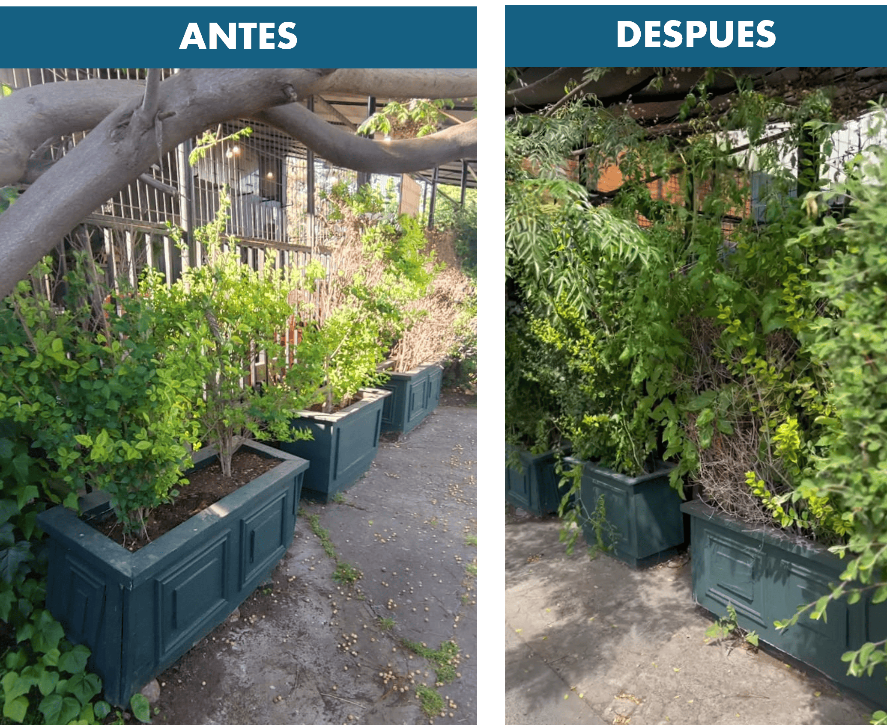
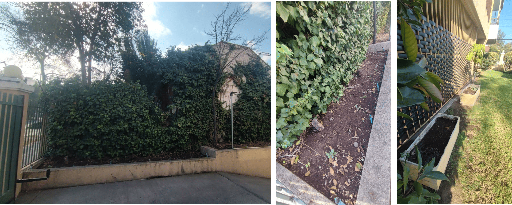
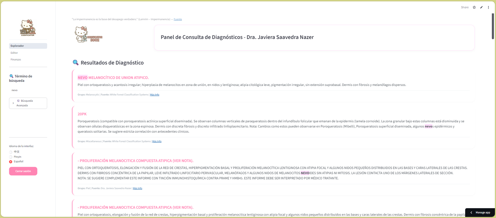
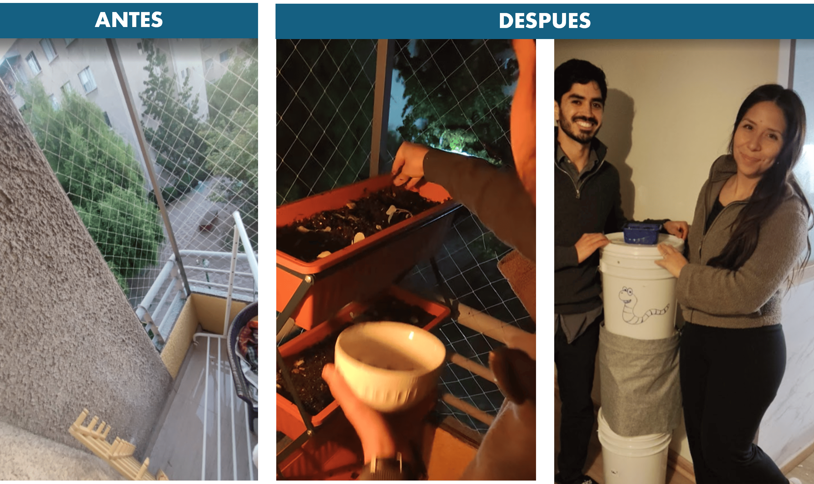
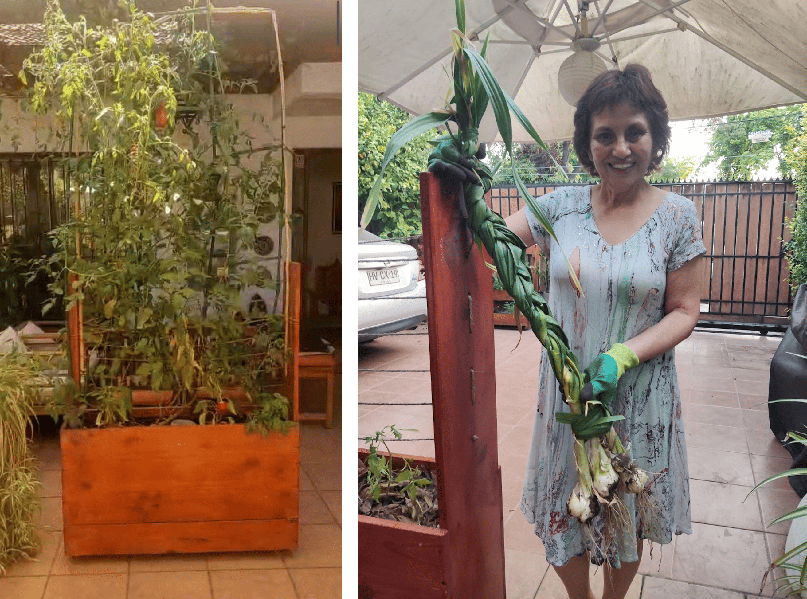
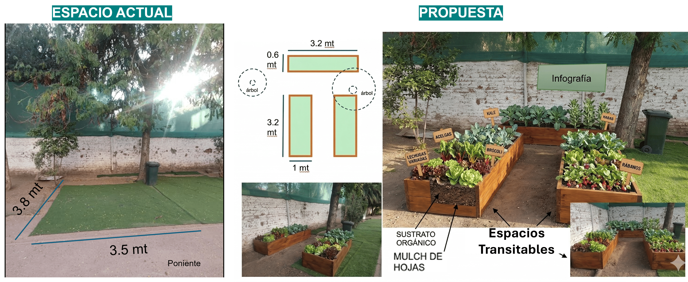

Transformaciones reales en hogares, comercios, organizaciones y escuelas
Organización · MEL & Digital
Aucca Centro Ecopedagógico
P
Problema
Sin herramientas para organizar datos de actividades ni medir el impacto de su trabajo ecopedagógico.
S
Solución
Sistema de monitoreo interno, dashboards de actividades y plataforma intranet personalizada.
R
Resultado
Datos centralizados y métricas claras para la coordinación del equipo y la comunicación del impacto.
Hogar · Diseño Regenerativo
Terraza en departamento urbano
P
Problema
Terraza inutilizada: solo cemento, mucho sol y cero producción en pleno Santiago.
S
Solución
Plan maestro con bancales autorregantes, compostaje y selección de cultivos para todo el año.
R
Resultado
Producción continua de hortalizas y hierbas, cero residuos orgánicos y espacio de bienestar diario.
Comercio · Huerto Urbano
Rende Bú Café · Providencia
P
Problema
Patio y accesos del café desaprovechados, sin identidad sostenible ni producción propia.
S
Solución
Integración de huertas, muro verde y bancales productivos en los espacios exteriores.
R
Resultado
Nueva inversión en infraestructura verde; cultivos comestibles como sello del carácter sostenible del café.

Comercio
Providencia, Santiago
Rende Bú Café
"Con Livlin este espacio cambió de carácter. Pasamos de tener espacios vacíos a cultivar alimentos mientras los clientes se rodean de plantas comestibles. Hoy avanzamos en las nuevas etapas del plan maestro."
Huerto urbanoPlan maestroDiseño regenerativo
Comercio
Providencia, Santiago
Lavaseco Florencia
"Pasto descuidado convertido en huerta de calle: tomates y girasoles en verano, habas y coliflores en otoño. El personal del lavaseco tiene su propio espacio verde — y los vecinos se detienen a mirar."
Huerto de calleDos temporadasAgroecológico

Comunidad
Providencia, Santiago
Edificio Nova
"Brócoli morado, alcachofas y habas en el patio del edificio. El personal recibió almácigos para llevar a sus hogares. Los limones del patio empezaron a compartirse. Una primera cosecha que abre conversaciones."
"Intranet propia: acuerdos, finanzas, gestión de eventos como restaurante y cuadraturas en tiempo real. Cada persona con su usuario. Una herramienta hecha a la medida del funcionamiento orgánico del centro."
MELIntranetGestión financieraPágina web

Organización
Providencia, Santiago
Sociedad Médica SN
"Bases de datos dispersas unificadas en una sola plataforma para acceso rápido en el ejercicio de diagnóstico. Una herramienta multipropósito adaptada exactamente a cómo trabaja el equipo."
Software a medidaBase de datosPlataforma médica
Hogar
Providencia, Santiago
Familia Javiera y Francis
"3,5 m² de bancales autorregantes con lombrices integradas: riego 2 veces al mes en verano, 1 en invierno. Cultivos todo el año desde 2022 en una terraza que antes secaba todo."
Wicking bedLombriculturaEnergía solarTodo el año

Hogar
San Miguel, Santiago
Familia Andrea y Felipe
"Diagnóstico, vermicompostera, germinador de semillas, bancal en maceta y cómo aprovechar el agua de la ducha para regar. La familia ahora gestiona sus residuos y cultiva sus propios alimentos en el departamento."
VermicomposteraGermindaorTalleres

Hogar
La Reina, Santiago
Familia Sylvia y Ricardo
"Plan maestro completo: compostera, bancal autorregante móvil con lombrices integradas y asesoría solar. Un bancal que también es muro verde y se mueve para seguir el sol en cada estación."
Plan maestroWicking bed móvilMuro verde
Hogar
Las Condes, Santiago
Familia Cecilia e Isidora
"Plan maestro con bancal autorregante, vermicompostera y un parrón construido para dar sombra natural en verano y bajar la temperatura de la casa. La parra como solución bioclimática."
Parrón bioclimáticoWicking bedVermicompostera

Educación
Ñuñoa, Santiago
Liceo Manuel de Salas
"No sólo una asesoría de suelo: visita al espacio, diseño, listado de siembra por estación, infografía pedagógica y apoyo constante. Esperamos pronto invitarlo a conocer nuestra huerta." — Isidora Saavedra, Profesora
"16 personas, 2 bancales con material reciclado, terraza de café sin agua cerca. Con el sistema de capilaridad: riego cada varias semanas. El segundo piso del café ahora es un huerto intergeneracional."
Taller prácticoRiego por capilaridadMaterial reciclado
Recurso gratuito
Descargar gratis
Por Francis Mason Bustos (林高天) · Noviembre 2025
Introducción al enfoque de la regeneración
Este documento introduce un marco conceptual para orientar la práctica docente frente a los efectos de la triple crisis planetaria (cambio climático, pérdida de biodiversidad y crisis de contaminación).
Plantea la necesidad de transitar desde paradigmas convencionales hacia enfoques regenerativos que mejoren activamente la salud ecosistémica.
Inspirado en el diseño regenerativo, la permacultura y procesos de transformación cultural, busca potenciar la capacidad de agencia mediante procesos educativos que integren ética, visión sistémica y participación comunitaria.
Francis Mason Bustos · 林高天Fundador de Livlin · Santiago, Chile
Con quién trabajarás
Rigor técnico, experiencia de campo y visión sistémica
Francis combina 15 años de experiencia en investigación aplicada, datos y facilitación con trabajo de campo concreto en regeneración urbana y educación ambiental. Ha apoyado a organizaciones en más de 130 países a medir y comunicar su impacto climático, y lleva años co-creando proyectos regenerativos en hogares, escuelas y comercios de Chile.
Sociólogo · Magíster Magna Cum Laude Universidad Alberto Hurtado, Santiago
Data Officer & Metrics Lead — Race to Resilience UNFCCC Climate Champions / Universidad de Chile · Apoyo a organizaciones en 130+ países
Facilitador de Teoría de Cambio Global Youth Coalition Training Programme · 200 líderes climáticos, traducción simultánea a 5 idiomas
Miembro permanente · AUCCA Centro Ecopedagógico Facilitador de educación para la sustentabilidad y regeneración ecosocial (2020–presente)
Directorio · AFS Chile Programas Interculturales Organización internacional de ciudadanía global (2014–2018)
Certificado en Permacultura y Diseño Regenerativo Eco-Escuela El Manzano · Certificado ETH Zürich: Worldviews — From Sustainability to Regeneration
Diploma en Estudios Chinos con Distinción Máxima Instituto de Estudios Internacionales, U. de Chile · Nombre chino: 林高天 (Lín Gāo Tiān)